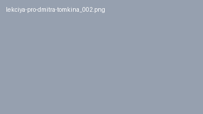
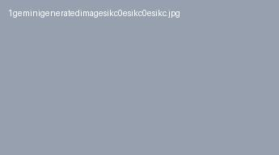
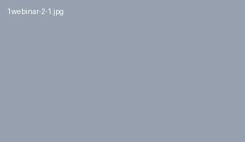
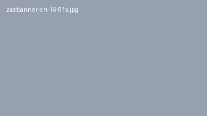

Незабаром у Львівській політехніці
чт., 19 листоп., 09:00
–
пт., 20 листоп., 15:00
XII Міжнародний молодіжний науковий форум «Litteris et Artibus» (LEA-2026)

пт., 20 листоп., 17:30
–
пт., 20 листоп., 19:00
У бібліотеці Львівської політехніки відбудеться лекція про українця, який підкорив Голлівуд

чт., 26 листоп., 09:30
–
чт., 26 листоп., 18:00
V Міжнародна студентська науково-практична конференція «Організаційні, правові та психолого-педагогічні аспекти реалізації професійної мобільності студентів у період війни: реалії та перспективи»
чт., 26 листоп., 10:00
–
чт., 26 листоп., 16:00
ІХ Міжнародна науково-практична конференція «Українська мова у світі. [ДЕ]українізація?»

чт., 26 листоп., 10:00
–
чт., 26 листоп., 15:00
Запрошуємо на міжнародний тренінг «Laser PRO Advanced Training for Ukrainian Laser Ecosystem (Part 2)»

пт., 27 листоп., 09:00
–
нд., 29 листоп., 16:00
6-та Міжнародна конференція «Інноваційні матеріали та наноінженерія» (IMNE-2026)